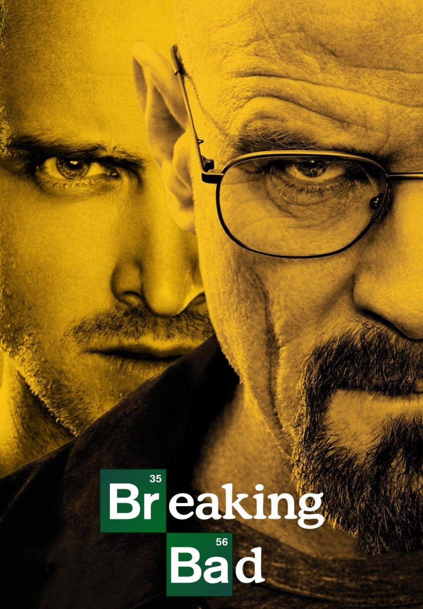

Breaking Bad
Breaking Bad, televizyon tarihinin en kusursuz karakter dönüşümlerinden birini sunar. Kanser teşhisi konan Walter White (Bryan Cranston), ailesinin geleceğini güvence altına almak için uyuşturucu üretimine adım atar ve zamanla Heisenberg adlı acımasız bir suç baronuna dönüşür.
Özet
Albuquerque, New Mexico'da geçen dizi; sadakat, güç, ahlak ve ölüm temalarını ustalıkla işler. Jesse Pinkman (Aaron Paul) ile kurulan ortaklık, dizinin duygusal omurgasını oluşturur. Her sezon Walter'ın karanlık tarafını bir adım daha açığa çıkarır.
Neden İzlemelisiniz?
Görsel anlatım, senaryo kalitesi ve oyunculuk performansları endüstri standardının çok üzerindedir. Özellikle 4. ve 5. sezonlar, televizyonun zirve noktalarından biri olarak kabul edilir. "Ozymandias" ve "Felina" bölümleri sinema kalitesinde deneyim sunar.
Artılar
- Efsanevi karakter gelişimi
- Her bölümü sürükleyici senaryo
- Bryan Cranston'ın kariyer performansı
- Mükemmel final
Eksiler
- İlk birkaç bölüm yavaş başlayabilir
- Şiddet sahneleri hassas izleyiciler için ağır